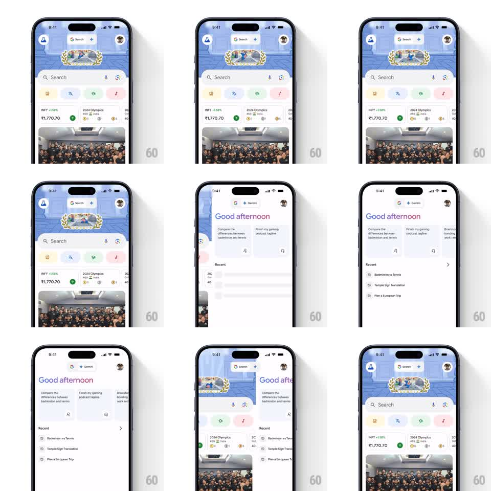

Media
Frame-by-frame

Rebuild this interaction 1:1: Google's Search/Gemini toggle - tapping the header toggle slides the entire Google Search feed out sideways while the Gemini "Good afternoon" screen slides in, the toggle pill morphing its label as the views trade places.

Rebuild this interaction 1:1: Google's Search/Gemini toggle - tapping the header toggle slides the entire Google Search feed out sideways while the Gemini "Good afternoon" screen slides in, the toggle pill morphing its label as the views trade places. ## Integration Integration: stack-agnostic spec - springs given as stiffness/damping, timed motions as duration + curve; map every value to your framework and animation library of choice. ## Scene Google app home: top bar with logo, a centered pill toggle labeled "Search" with a sparkle, avatar right; below, a doodle banner, search field, chip row, glance cards (stocks, 2024 Olympics), and a photo. Gemini side: same top bar with the toggle now labeled "Gemini", a gradient "Good afternoon" greeting, suggestion cards, and a Recent list. ## Motion spec Pattern: horizontal slide-and-fade view swap with a morphing toggle. - Tap the toggle (or swipe horizontally): the current view slides out sideways (~30% travel) while fading to 0, and the incoming view slides in from the opposite side starting at ~15% offset and fade 0 - the outgoing leads, the incoming follows, ~350ms total, ease-out. - The toggle pill itself morphs: the label crossfades Search to Gemini (~150ms) and the pill's fill/highlight shifts to the new state's accent as the views pass their midpoint. - The top bar and avatar stay fixed - only the content region and the toggle label animate. - A horizontal drag scrubs the same transition 1:1 with the finger and settles to the nearer view on release (spring stiffness ~300, damping ~26). ## Calibration - The two views overlap in transit briefly; a hard cut or a gap (both faded) breaks the spatial relationship. - Keep travel modest (~30%); full-width slides make the app feel like a carousel. ## Reduced motion Views crossfade in place (200ms); toggle label swaps instantly. ## Don't miss - Direction is consistent: Gemini lives to the right of Search - entering Gemini always comes in from the right, Search from the left. - The greeting's gradient text (blue to pink) is the Gemini side's signature and fades in with the view, not after it.